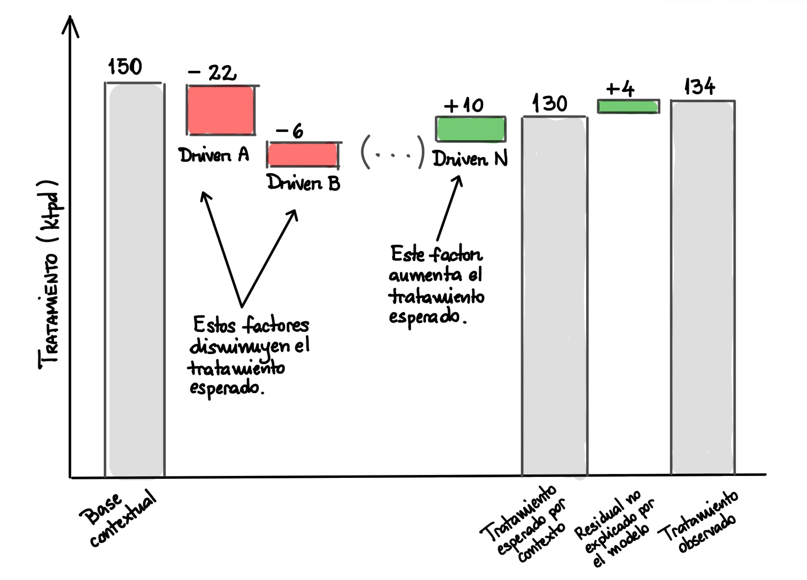

5. Inferencia Bayesiana con PyMC
¿Por qué modelar una distribución y no sólo un punto?
Nuestro diseño de producto final es un gráfico como el que se muestra en la Figura 1.

El gráfico de cascada permite a un ingeniero de planta ver qué parte del tratamiento observado se explica por la firma geológica de la alimentación, la procedencia del mineral y su dureza, y qué parte depende de las condiciones operacionales. La base contextual que define la primera barra del gráfico corresponde a la media esperada para un determinado período de tiempo (con granularidad diaria), y se calcula a partir del muestreo realizado sobre la distribución a posteriori de la media de tratamiento. Las contribuciones de cada variable se calculan conforme un modelo de regresión lineal que permite estimar parámetros a priori para cada una de las variables contextuales que deseamos incluir en el modelo. La barra final del gráfico corresponde al tratamiento observado, y la diferencia entre esta barra y la base contextual nos permite aislar el efecto operacional.
Esta representación desacoplada del tratamiento, por definición, requiere de una referencia contextual, pero también debe ser capaz de distinguir entre dos afirmaciones:
- La media esperada de tratamiento, para este contexto, es cercana a los 2230 tph.
- El próximo día observado “debiera” caer cerca de los 2230 tph.
La segunda afirmación incluye la incertidumbre sobre la media más la variabilidad diaria que el contexto no captura. Un modelo Bayesiano conserva ambas fuentes como distribuciones y permite regularizar familias con soporte desigual dentro de una misma especificación. Esta es la razón por la que el producto final no es un punto, sino una distribución de muestras que permite calcular intervalos creíbles y predictivos. Y también la razón por la cual naturaleza del producto es ex post y no ex ante: El modelo se ajusta a los datos observados y no a un conocimiento externo.
En términos generales, conforme el teorema de Bayes, queremos estimar la distribución a posteriori de los parámetros del modelo, dado un conjunto de datos observados. Esto nos permite cuantificar la incertidumbre en nuestras estimaciones y hacer inferencias sobre el comportamiento futuro del sistema que estamos modelando. Sea \(P\left( \mathbf{w} |y_{i},\mathbf{x}_{i} \right)\) la distribución a posteriori de los parámetros \(\mathbf{w}\in \mathbb{R}^{n}\) dado un conjunto de datos observados \((y_{i},\mathbf{x}_{i})\), para \(i=1,\ldots,m\). Según el teorema de Bayes, esta distribución se puede expresar como
\[ \begin{array}{lll}P\left( \mathbf{w} |y_{i},\mathbf{x}_{i} \right)&=&\dfrac{\overbrace{P\left( y_{i}|\mathbf{x}_{i} ,\mathbf{w} \right)}^{\text{verosimilitud}} \overbrace{P\left( \mathbf{w} \right)}^{\text{a priori}}}{\underbrace{\displaystyle \int P\left( y_{i}|\mathbf{x}_{i} ,\mathbf{w} \right) P\left( \mathbf{w} \right) d\mathbf{w}}_{\text{evidencia}}}\\ &\propto&P\left( y_{i}|\mathbf{x}_{i} ,\mathbf{w} \right) P\left( \mathbf{w} \right)\end{array} \]
donde:
- \(P\left( y_{i}|\mathbf{x}_{i} ,\mathbf{w} \right)\) es la verosimilitud de los datos observados dado los parámetros del modelo.
- \(P\left( \mathbf{w} \right)\) es la distribución a priori de los parámetros del modelo, que refleja nuestro conocimiento previo sobre los mismos antes de observar los datos.
- \(P\left( y_{i}|\mathbf{x}_{i} ,\mathbf{w} \right) P\left( \mathbf{w} \right)\) es la distribución conjunta de los datos y los parámetros del modelo. La multiplicación implica que estas son estadísticamente independientes, lo que es una suposición común en modelos Bayesianos.
- \(\int P\left( y_{i}|\mathbf{x}_{i} ,\mathbf{w} \right) P\left( \mathbf{w} \right) d\mathbf{w}\) es la evidencia, que normaliza la distribución a posteriori y asegura que su cobertura en todo el espacio sea igual a \(1\), conforme los axiomas de probabilidad.
La evidencia suele ser muy difícil de calcular, especialmente en modelos complejos con muchos parámetros. Por ello, en la práctica, a menudo se trabaja con la distribución a posteriori sin normalizar, es decir, considerando la proporcionalidad entre la distribución a priori y la distribución conjunta de los datos y los parámetros del modelo. Esto nos permite realizar inferencias sobre los parámetros del modelo sin necesidad de calcular la evidencia explícitamente.
Por cierto, el vector de parámetros \(\mathbf{w}\) incluye el sesgo, los coeficientes de las variables contextuales, las escalas jerárquicas y la varianza del ruido.
En la práctica, la construcción del modelo Bayesiano se realiza por medio de la librería PyMC, la que permite definir el modelo y aproximar la distribución a posteriori de los parámetros mediante métodos de muestreo avanzados como el uso de métodos de Monte Carlo basados en cadenas de Markov (MCMC, del inglés Markov chain Monte Carlo). Por otro lado, la librería ArviZ nos permite almacenar las muestras etiquetadas y realizar diagnósticos sobre la convergencia y la calidad del muestreo conforme las cadenas de Markov generadas.
Modelo jerárquico de efectos globales
Para el día \(d\), nuestro modelo de tratamiento tiene la siguiente ecuación estructural:
\[ y_{d}=\mathcal{N} \left( \underbrace{\alpha +\sum_{j=1}^{J_{x}} \tilde{x}_{dj} \beta_{j} +\sum_{r=1}^{J_{z}} \tilde{z}_{dr} \gamma_{r} +\sum_{s=1}^{J_{h}} \tilde{h}_{ds} \delta_{s} +u_{c[d]}}_{=\mu_{d} \rightarrow \text{suma de efectos globales}} ,\underbrace{\sigma_{\text{obs}}^{2}}_{=\text{ruido operacional}} \right) \]
donde:
- \(y_{d}\): Tratamiento observado en tph para el día \(d\).
- \(\mu_{d}=\alpha +\sum_{j=1}^{J_{x}} \tilde{x}_{dj} \beta_{j} +\sum_{r=1}^{J_{z}} \tilde{z}_{dr} \gamma_{r} +\sum_{s=1}^{J_{h}} \tilde{h}_{ds} \delta_{s} +u_{c[d]}\) es un modelo de regresión lineal que combina efectos globales y jerárquicos, y que constituye el punto de partida para la inferencia Bayesiana, ya que permite estimar valores a priori encapsulados en los parámetros de la regresión.
- \(\sigma_{\text{obs}}\): Desviación estándar asociada a ruido no explicado por el modelo, que asumiremos que representa la variabilidad operacional de la planta concentradora que no depende de aspectos contextuales.
- \(\alpha\): Parámetro de sesgo que representa el nivel promedio de tratamiento para todas las firmas geológicas.
- \(\tilde{x}_{dj}\): Variables contextuales estandarizadas que representan el estado de sistemas periféricos de la molienda y la granulometría de alimentación.
- \(\tilde{z}_{dr}\): Variables contextuales asociadas a las fuentes de mineral, con dependencia espacial, las que omiten una categoría de referencia para evitar colinealidad.
- \(\tilde{h}_{ds}\): Variables contextuales asociadas a la dureza in-situ del mineral, las que omiten la categoría
mediumpara evitar colinealidad. - \(u_{c[d]}\): Efecto jerárquico que representa el desvío de la firma geológica asignada al día \(d\), con suma nula para garantizar la identificabilidad del sesgo \(\alpha\).
Escogemos la distribución normal para modelar el tratamiento observado porque es una variable continua agregada, siendo esta distribución una aproximación razonable para este tipo de datos. Sin embargo, esta elección implica asumir que los residuos condicionales con respecto a los tratamientos de molienda observados son simétricos y tienen varianza constante, dependiendo únicamente de la gestión operacional. No se incorporan aspectos más complejos, tales como autocorrelación ni colas robustas; esas limitaciones se declaran de manera previa en el mismo proyecto.
Los coeficientes \(\beta_{j},\gamma_{r}\) y \(\delta_{s}\) representan los efectos de las variables contextuales estandarizadas, describiendo asimismo los efectos globales de cada covariable sobre el tratamiento esperado. Dicho de manera más formal, la misma relación entre una covariable y el tratamiento esperado se aplica a todos los días y firmas geológicas. De esta manera, con variables ya estandarizadas, la derivada parcial de la media esperada con respecto a una covariable es igual al coeficiente respectivo:
\[ \frac{\partial \mu_{d}}{\partial \tilde{x}_{dj}} =\beta_{j} \quad ;\quad \frac{\partial \mu_{d}}{\partial \tilde{z}_{dr}} =\gamma_{r} \quad ;\quad \frac{\partial \mu_{d}}{\partial \tilde{h}_{ds}} =\delta_{s} \]
En este modelo, cuando hablamos de “global”, no nos referimos a causalidad ni universalidad, sino a que no permitimos que la pendiente cambie por cluster, mes o línea. Esta elección de modelamiento controla la complejidad del modelo frente a los 716 días observados del contrato diario completo. Dentro del backtesting, cada ajuste utiliza cerca de 358 días de entrenamiento. Alternativas más sofisticadas podrían permitir pendientes variables por firma, pero añadirían parámetros e interacciones que necesitarían soporte y validación propios.
Procedimentalmente, cada variable contextual se estandariza dentro del conjunto de entrenamiento de cada pliegue de validación, de manera que los coeficientes se expresen aproximadamente en tph por desviación estándar (cambio típico) y los valores a priori de escala sean comparables. El conjunto de prueba utiliza exactamente la misma media y desviación estándar calculadas sobre el conjunto de entrenamiento, ya que se recálculo sobre el conjunto de prueba derivaría en data leakage.
Identificabilidad del parámetro de sesgo y las firmas geológicas
Si suponemos que cada firma geológica que caracteriza a la alimentación de la molienda tiene un efecto libre, entonces existe una simetría del tipo
\[ \alpha'=\alpha-a\quad ; \quad u_c'=u_c+a \]
donde \(a\) es un valor arbitrario. Esta simetría deja la media esperada de tratamiento \(\mu_{d}\) sin cambios, lo que implica que la distribución a posteriori de tratamiento tendría una dirección redundante y el parámetro de sesgo \(\alpha\) perdería interpretación. Para evitar esta situación, imponemos una restricción de suma nula sobre los efectos de las firmas geológicas, de manera tal que el parámetro de sesgo \(\alpha\) represente el nivel promedio de tratamiento sobre todas las firmas geológicas, y \(u_c\) represente un desvío relativo respecto de ese promedio. La restricción se implementa mediante la siguiente parametrización:
Distribuciones asumidas para los efectos de las firmas geológicas y su escala: \(u_{c}^{\text{raw}}\sim \mathcal{N}(0, 1)\) y \(\sigma_{u}\sim \bar{\mathcal{N}}(75)\), donde \(\bar{\mathcal{N}}\) representa una distribución normal truncada a valores positivos. El número \(75\) representa la escala inicial, en tph, para la desviación estándar de los efectos de las firmas geológicas y permanece declarado como parámetro auditable.
Transformación de los efectos de las firmas geológicas para garantizar suma nula:
\[ u_{c}=\sigma_{u} \left( u_{c}^{\text{raw}}-\frac{1}{k} \sum_{t=1}^{k} u_{t}^{\text{raw}} \right) \quad ;\quad \sum_{c} u_{c}=0 \]
donde \(k\) es el número total de firmas geológicas, \(u_{c}^{\text{raw}}\) son los efectos de las firmas geológicas sin restricción, y \(u_{c}\) son los efectos transformados que cumplen la restricción de suma nula.
Bajo esta parametrización, la distribución a posteriori de los efectos de las firmas geológicas se centra alrededor de cero, y el parámetro de sesgo \(\alpha\) representa el nivel promedio de tratamiento sobre todas las firmas geológicas. Esto permite interpretar los efectos de las firmas geológicas como desviaciones relativas respecto del promedio, lo que facilita la comprensión y comunicación de los resultados del modelo. A nivel de código, la restricción se implementa de la siguiente manera:
signature_raw = pm.Normal("signature_raw", 0.0, 1.0, dims="signature")
signature_effect = pm.Deterministic(
"signature_effect",
(signature_raw - pt.mean(signature_raw)) * sigma_signature,
dims="signature",
)donde signature_raw representa los efectos de las firmas geológicas sin restricción, y signature_effect representa los efectos transformados que cumplen la restricción de suma nula. La media de signature_raw se resta de cada efecto individual, y luego se multiplica por la escala sigma_signature para obtener los efectos finales que se utilizan en el modelo. La librería PyMC se importa por medio del alias pm.
Estas transformaciones tienen un subtexto más bien práctico: La parametrización permite mantener una única base para el gráfico de cascada que deseamos construir, conforme al diseño de la Figura 1. No se añade un segundo sesgo geológico, lo que simplifica la interpretación de los resultados y facilita la comunicación de los efectos de las firmas geológicas en el tratamiento esperado.
Agrupamiento parcial para variables de procedencia y dureza in–situ
Las categorías de procedencia y dureza in–situ tienen soportes muy diferentes, porque el modelo de dureza no está definido para todos los bloques que caracterizan al yacimiento minero, y el mismo modelo de bloques no se aplica a todas las fuentes de mineral (por ejemplo, los stocks mina, por su naturaleza transitoria, no disponen de un modelo de bloques). Estimar cada coeficiente con un valor a priori completamente independiente permitiría efectos extremos en categorías sin soporte estadístico significativo. Para evitar esto, usamos escalas compartidas para los efectos de procedencia y dureza in–situ, lo que permite que los datos aprendan la variabilidad sistemática de cada grupo de categorías y regularicen los efectos individuales en consecuencia. Esta técnica se conoce como agrupamiento parcial, y permite que los grupos con pocos datos “tomen prestada” información de los demás, evitando estimaciones extremas y mejorando la estabilidad del modelo.
Para la procedencia, asumimos que los efectos de las categorías de procedencia \(k\) se distribuyen normalmente alrededor de cero, con una desviación estándar \(\sigma_z\) que es aprendida a partir de los datos:
\[ \eta_{k} \sim \mathcal{N} \left( 0,1 \right) \quad ;\quad \sigma_{z} \sim \bar{\mathcal{N}} \left( 55 \right) \quad ;\quad \gamma_{k} =\sigma_{z} \eta_{k} \]
Y para la dureza in–situ, asumimos que los efectos de las categorías de dureza \(m\) se distribuyen normalmente alrededor de cero, con una desviación estándar \(\sigma_h\) que también es aprendida a partir de los datos:
\[ \xi_{m} \sim \mathcal{N} \left( 0,1 \right) \quad ;\quad \sigma_{h} \sim \bar{\mathcal{N}} \left( 45 \right) \quad ;\quad \delta_{m} =\sigma_{h} \xi_{m} \]
Si la correspondiente familia de categorías muestra poca variabilidad sistemática, la escala se contrae y todos los efectos colapsan a cero. Si existe señal consistente, la escala puede crecer. La expresión \(\gamma_{k} =\sigma_{z} \eta_{k}\) es una parametrización no centrada, que en jerarquías débiles suele producir una geometría a posterior más fácil para métodos MCMC como Monte Carlo Hamiltoniano, porque separa la variable estandarizada de su escala. Esta técnica de agrupamiento parcial es más flexible que forzar igualdad entre los efectos de las categorías, y más regularizada que estimar cada categoría sin relación, lo que permite obtener estimaciones más robustas y confiables para las categorías con pocos datos.
Valores a priori empíricos para efectos regulares
Conforme el modelo de efectos globales, para las variables no composicionales, los efectos regulares descritos por los coeficientes \(\beta_{j}\) se estiman a partir de un modelo de regresión lineal ajustado a los datos de entrenamiento. Para cada coeficiente \(\beta_{j}\), se asume una distribución normal con media igual al valor estimado por la regresión lineal y desviación estándar igual a dos veces el error estándar robusto estimado por la regresión lineal. Esta elección de valor a priori empírico permite que los efectos regulares se ajusten a los datos observados, mientras que la desviación estándar más amplia permite cierta flexibilidad en la estimación de los efectos regulares, permitiendo una banda creíble más amplia para los efectos regulares y evitando que el modelo se sobreajuste a los datos de entrenamiento. La elección de dos veces el error estándar robusto es una heurística que permite capturar la variabilidad de los efectos regulares sin ser demasiado restrictivo, y se puede ajustar según la naturaleza de los datos y la complejidad del modelo.
La corrección de errores estándar robustos se realiza mediante la estimación de la matriz de covarianza de los errores utilizando el método de consistencia Newey-West o HAC (del inglés heteroscedasticity and autocorrelation consistent), que permite obtener estimaciones más precisas de los errores estándar en presencia de heterocedasticidad y autocorrelación en los datos. La elección de un retardo o lag igual a \(7\) para la corrección HAC es una decisión basada en la naturaleza de los datos y la estructura temporal del modelo, y puede ajustarse según sea necesario:
\[ \hat{\mathrm{Var}}_{\text{HAC}} (\hat{\beta} )=\left( \mathbf{X}^{\top} \mathbf{X} \right)^{-1} \hat{\Omega}_{\text{HAC}} \left( \mathbf{X}^{\top} \mathbf{X} \right)^{-1} \]
donde:
- \(\hat{\mathrm{Var}}_{\text{HAC}} (\hat{\beta} )\) es la matriz de covarianza de los errores estándar robustos estimada mediante el método HAC.
- \(\mathbf{X}\) es la matriz de diseño del modelo de regresión lineal.
- \(\hat{\Omega}_{\text{HAC}}\) es la matriz de covarianza de los errores estimada mediante el método HAC.
Luego, para cada coeficiente \(\beta_{j}\), se asume la siguiente distribución a priori:
\[ \beta_{j} \sim \mathcal{N} \left( \hat{\beta}_{j}^{\text{OLS}} ,2\ \mathrm{SE}_{\text{rob}} \left( \hat{\beta}_{j}^{\text{OLS}} \right) \right) \]
donde \(\hat{\beta}_{j}^{\text{OLS}}\) es el valor estimado del coeficiente \(\beta_{j}\) mediante el modelo de regresión lineal, y \(\mathrm{SE}_{\text{rob}} \left( \hat{\beta}_{j}^{\text{OLS}} \right)\) es el error estándar robusto estimado mediante el método HAC. La elección de una desviación estándar igual a \(2\)$ veces el error estándar robusto permite capturar la variabilidad de los efectos regulares sin ser demasiado restrictivo, y se puede ajustar según la naturaleza de los datos y la complejidad del modelo.
A fin de no generar estimaciones demasiado optimistas, la construcción de los valores a priori empíricos se realiza dentro de cada pliegue de validación, utilizando únicamente los datos de entrenamiento. De esta manera, se evita que el modelo se sobreajuste a los datos de prueba y se garantiza que las estimaciones sean más robustas y confiables. Para ello, el modelo Bayesiano se convierte en una especie de entidad viva que se ajusta siempre en un año móvil de entrenamiento, generando proyecciones a modo de backtesting sobre los dos meses siguientes. Esta estrategia permite evaluar la capacidad del modelo para generalizar a datos no vistos y proporciona una medida más realista de su desempeño en situaciones del mundo real.
En el esquema Bayesiano, el sesgo \(\alpha\) y la desviación estándar del ruido \(\sigma_{\text{obs}}\) también se estiman a partir de los datos de entrenamiento, utilizando una distribución normal para el sesgo y una distribución normal truncada a valores positivos para la desviación estándar del ruido. La elección de estas distribuciones permite capturar la variabilidad de los parámetros sin ser demasiado restrictivo, y se puede ajustar según la naturaleza de los datos y la complejidad del modelo:
\[ \alpha \sim \mathcal{N} \left( \bar{y}_{\mathcal{D}} ,\max \left\{ s_{y},\hat{\sigma}_{\text{OLS}} \right\} \right) \quad ;\quad \sigma_{\text{obs}} \sim \bar{\mathcal{N}} \left( \hat{\sigma}_{\text{OLS}} \right) \]
Diseño del modelo Bayesiano en PyMC
PyMC es una librería de Python que permite construir modelos probabilísticos y realizar inferencia Bayesiana mediante métodos de muestreo avanzados como MCMC. La librería utiliza un enfoque de programación declarativa, lo que significa que el usuario define el modelo en términos de variables aleatorias y sus relaciones, y la librería se encarga de construir el grafo de dependencias y realizar la inferencia. La ventaja de su uso es que la construcción de los modelos sigue una sintaxis intuitiva y cercana a la notación matemática, lo que facilita la comprensión y comunicación de los modelos probabilísticos. Además, PyMC permite realizar diagnósticos de convergencia y análisis de sensibilidad, lo que ayuda a evaluar la calidad de las inferencias obtenidas.
La compilación del grafo de dependencias se realiza mediante la librería PyTensor, que permite optimizar el cálculo de las distribuciones a posteriori y mejorar la eficiencia del muestreo. La librería utiliza técnicas de diferenciación automática para calcular los gradientes de las distribuciones a posteriori, lo que permite utilizar métodos de muestreo basados en gradientes como Monte Carlo Hamiltoniano (HMC) y No-U-Turn Sampler (NUTS). Esto mejora la eficiencia del muestreo y permite obtener inferencias más precisas y confiables.
En este proyecto, el diseño del modelo es directo:
with pm.Model(coords=coords):
regular_train = pm.Data(
"regular_train", X_train, dims=("obs_train", "regular_feature")
)
alpha = pm.Normal("alpha", mu=y_train.mean(), sigma=alpha_scale)
beta_regular = pm.Normal(
"beta_regular",
mu=regular_prior_mean,
sigma=regular_prior_std,
dims="regular_feature",
)
mu_train = alpha + pm.math.dot(regular_train, beta_regular)
mu_train += pm.math.dot(zone_train, beta_zone)
mu_train += pm.math.dot(hardness_train, beta_hardness)
mu_train += signature_effect[train_signature_index]
pm.Normal(
"observed_tph",
mu=mu_train,
sigma=sigma_observation,
observed=y_train,
dims="obs_train",
)
idata = pm.sample(**sampling, return_inferencedata=True)En este fragmento de código, la clase pm.Model define el modelo probabilístico, el cual suele definirse dentro de un context manager que permite encapsular la definición de las variables aleatorias y sus relaciones. La función pm.Data registra los datos de entrenamiento como una variable aleatoria, lo que permite que el modelo pueda ser actualizado con nuevos datos sin necesidad de redefinirlo. Las variables aleatorias alpha, beta_regular, mu_train y observed_tph representan los parámetros del modelo y la distribución a posteriori de los datos observados. La función pm.sample realiza el muestreo de la distribución a posteriori utilizando métodos MCMC, y devuelve un objeto InferenceData que contiene las muestras obtenidas.
Los argumentos coords (en pm.Model) y dims (en pm.Data, pm.Normal y pm.Deterministic) permiten etiquetar las dimensiones de las variables aleatorias, lo que facilita la interpretación de los resultados y la visualización de las distribuciones a posteriori. En este proyecto, se utilizan las siguientes coordenadas y dimensiones:
regular_feature: características regulares del modelo.zone_feature: zonas geográficas.hardness_feature: dureza del material.signature: firmas de los datos.obs_train: observaciones de entrenamiento.
Técnica de muestreo sin giros en U (NUTS)
El muestreo de la distribución a posteriori (para los parámetros del modelo) se realiza mediante el algoritmo No-U-Turn Sampler (NUTS, que literalmente significa muestreo sin giros en U), y que es una variante del método de Monte Carlo Hamiltoniano (HMC). NUTS utiliza gradientes de la distribución a posteriori para proponer nuevas muestras, lo que permite explorar el espacio de parámetros de manera más eficiente que los métodos MCMC más tradicionales. Además, NUTS ajusta automáticamente la longitud de las trayectorias de muestreo para evitar “giros en U” (es decir, trayectorias que se doblan sobre sí mismas), lo que mejora la eficiencia del muestreo y reduce la autocorrelación entre las muestras.
En este proyecto, se utiliza la función pm.sample para realizar el muestreo de la distribución a posteriori utilizando NUTS. La función permite especificar varios parámetros de control, como el número de cadenas de Markov, el número de iteraciones de ajuste y el número de muestras guardadas por cadena. Además, se puede especificar el parámetro target_accept, que controla la tasa de aceptación de las propuestas de muestreo y puede ayudar a reducir el riesgo de divergencias en el muestreo. En este proyecto, seteamos target_accept=0.99, lo que indica que se desea una tasa de aceptación alta y conservadora, lo que puede ayudar a reducir el riesgo de divergencias en el muestreo.
Las divergencias muestrales son advertencias que indican que el muestreo no pudo explorar adecuadamente una región de alta curvatura en la distribución a posteriori. Esto puede deberse a una mala parametrización del modelo, escalas inadecuadas o problemas geométricos inherentes a la topología de la distribución a posteriori. Las divergencias pueden afectar la calidad de las inferencias obtenidas y deben ser revisadas cuidadosamente. Después de regenerar los datos sintéticos, la corrida final con cuatro cadenas terminó con cero divergencias, un valor de \(\hat R_{\max}=1.01\) y un tamaño efectivo mínimo (bulk ESS) de 894 muestras. Estos diagnósticos respaldan la convergencia del ajuste final. Algunos parámetros de determinados pliegues del backtesting emitieron advertencias de tamaño efectivo menor a 100; por ello, las métricas fuera de muestra deben leerse como una evaluación reproducible del conjunto y no como garantía de estabilidad de cada parámetro local.
Formato de salida del modelo: Media a posteriori versus predictibilidad
Una vez construido el modelo Bayesiano, lo que obtenemos como resultado es una distribución a posteriori de los parámetros que constituyen el modelo de regresión lineal que representa la suma de efectos globales jerárquicos para el tratamiento de molienda. Esta distribución a posteriori nos permite calcular la media esperada de tratamiento para un determinado contexto, así como la incertidumbre asociada a esta estimación. Además, podemos generar predicciones para observaciones futuras, incorporando la variabilidad operacional que no está explicada por el modelo.
En la práctica, para cada muestra \(s\) de la distribución a posteriori, calculamos la media esperada de tratamiento \(\mu_t^{(s)}\) para un determinado contexto, y luego generamos una predicción para una observación futura \(\tilde{y}_t^{(s)}\) agregando ruido operacional \(\epsilon_t^{(s)}\). Esto nos permite obtener una distribución predictiva que refleja tanto la incertidumbre en la estimación de la media como la variabilidad operacional que no está explicada por el modelo.
Matemáticamente, la media esperada de tratamiento para una muestra \(s\) en un día \(t\) (del conjunto de prueba \(\mathcal{T}\)) se calcula como:
\[ \mu_t^{(s)} =\alpha^{(s)} +\tilde x_t^\top\beta^{(s)} +\tilde z_t^\top\gamma^{(s)} +\tilde h_t^\top\delta^{(s)} +u_{c[t]}^{(s)} \]
La banda creíble alrededor de este valor medio se construye a partir de los percentiles 5% y 95% de la distribución de \(\mu_t^{(s)}\) para todas las muestras \(s\), centrada por supuesto en su mediana (o percentil 50%). Esta banda creíble refleja la incertidumbre en la estimación de la media esperada de tratamiento para el contexto dado. Sin embargo, para generar predicciones para observaciones futuras, debemos agregar ruido operacional \(\epsilon_t^{(s)}\) a la media esperada de tratamiento, lo que nos permite obtener una distribución predictiva que refleja tanto la incertidumbre en la estimación de la media como la variabilidad operacional que no está explicada por el modelo:
\[ \tilde{y}_{t}^{(s)} =\mu_{t}^{(s)} +\epsilon_{t}^{(s)} \quad ;\quad \epsilon_{t}^{(s)} \sim \mathcal{N} (0,\sigma_{\text{obs}}^{(s)} ) \]
El intervalo predictivo resultante debe ser más ancho que la banda creíble de la media, ya que incorpora tanto la incertidumbre en la estimación de la media como la variabilidad operacional. Comparar observaciones diarias contra el intervalo de la media produciría una cobertura artificialmente baja, ya que no se estaría considerando la variabilidad operacional que puede afectar las observaciones futuras.
La construcción de la distribución predictiva se realiza en el nodo denominado fit_final_identifiable_hierarchical_model, cuya salida está constituida por los datasets "final_inference_data" y "posterior_parameter_summary". El primero contiene las muestras de la distribución a posteriori de los parámetros del modelo, así como las predicciones generadas para observaciones futuras. El segundo contiene un resumen estadístico de los parámetros del modelo, incluyendo la media, la desviación estándar y los percentiles 5% y 95% de la distribución a posteriori. La salida de este nodo permite realizar análisis posteriores, como la evaluación del desempeño del modelo mediante métricas de error y cobertura predictiva, así como la visualización de las contribuciones de cada variable contextual al tratamiento esperado.
La documentación de PyMC presenta los llamados prior y posterior predictive checks como parte del flujo de validación del modelo. Estos chequeos permiten evaluar si el modelo es capaz de reproducir aspectos relevantes de la distribución observada, generando datos simulados a partir de las distribuciones a priori y a posteriori de los parámetros del modelo. Esto nos permite identificar posibles problemas en la especificación del modelo, como la elección de distribuciones a priori inadecuadas o la falta de capacidad del modelo para capturar la variabilidad observada en los datos.
Procedimiento de backtesting
Para validar los resultados del modelo Bayesiano, a nivel estadístico (digamos, métricas de error y cobertura predictiva) y a nivel de negocio (digamos, confiabilidad de la predicción para la operación), se realiza un procedimiento de backtesting que simula lo que habría sabido el modelo en cada momento del tiempo. Este procedimiento permite evaluar la capacidad del modelo para generalizar a datos no vistos y proporciona una medida más realista de su desempeño en situaciones del mundo real.
Supongamos que disponemos de un conjunto de datos completo \(\mathcal{M}\) que contiene un total de \(M\) meses de observaciones con granularidad diaria. Para cada fecha de corte \(t\), se define un conjunto de entrenamiento \(\mathcal{D}_t\) que contiene los 12 meses anteriores, y un conjunto de prueba \(\mathcal{T}_t\) que contiene los dos meses siguientes. Si escribimos los límites en meses, la idea es \(\mathcal{D}_t = \{y_{d}, \mathbf{x}_{d}\}_{d=t-12}^{t-1}\) y \(\mathcal{T}_t = \{y_{d}, \mathbf{x}_{d}\}_{d=t}^{t+1}\).
En palabras menos rimbombantes, el modelo se entrena con un año móvil de datos y se prueba con los dos meses siguientes, avanzando el corte en pasos de dos meses, a modo de forecasting. Para el año sintético 2035, la configuración base produce seis pliegues consecutivos y no superpuestos. De esta manera, cada día elegible del período fuera de muestra recibe una predicción que puede compararse con su observación sintética.
En cada ventana móvil, se recalculan las referencias y columnas composicionales con soporte, las medias y desviaciones de estandarización, los coeficientes de regresión lineal y los errores estándar robustos para los valores a priori empíricos, la distribución a posteriori de los parámetros del modelo y el ruido operacional, así como las contribuciones de cada variable contextual al tratamiento esperado para las fechas del conjunto de prueba. Esto permite que el modelo se ajuste a los cambios en la distribución de los datos a lo largo del tiempo y capture la variabilidad operacional que puede afectar las observaciones futuras.
¿La razón? La alimentación de la planta concentradora rota en el tiempo, pero no con una variabilidad tan alta como para que un año de historia no represente el régimen vigente. La ventana móvil permite que el modelo se adapte a los cambios en la distribución de los datos a lo largo del tiempo, capturando la variabilidad operacional que puede afectar las observaciones futuras.
Las métricas de desempeño que se reportan para cada ventana móvil de prueba son las siguientes, siendo \(\mathcal{T}:{p}\) el número de días evaluados en el conjunto de prueba:
- Error cuadrático medio en raíz (RMSE): \(\text{RMSE} =\left[ \frac{1}{\mathcal{T}_{p}} \sum_{t=1}^{\mathcal{T}_{p}} (\hat{y}_{t} -y_{t})^{2} \right]^{\frac{1}{2}}\).
- Error medio absoluto (MAE): \(\text{MAE} =\frac{1}{\mathcal{T}_{p}} \sum_{t=1}^{\mathcal{T}_{p}} |\hat{y}_{t} -y_{t}|\).
- Sesgo de predicción: \(\text{B} =\frac{1}{\mathcal{T}_{p}} \sum_{t=1}^{\mathcal{T}_{p}} (\hat{y}_{t} -y_{t})\).
- Cobertura predictiva nominal al 90%: \(\text{Cob}_{90} =\frac{1}{\mathcal{T}_{p}} \sum_{t=1}^{\mathcal{T}_{p}} \mathbb{1}\{q_{0.05,t} \leq y_{t} \leq q_{0.95,t}\}\), donde \(q_{0.05,t}\) y \(q_{0.95,t}\) son los percentiles 5% y 95% de la distribución predictiva para el día \(t\), respectivamente. Esta métrica permite evaluar la capacidad del modelo para capturar la variabilidad operacional que puede afectar las observaciones futuras, y proporciona una medida de la confiabilidad de las predicciones generadas por el modelo.
Después de regenerar el proyecto con datos completamente sintéticos, la corrida reproducible publicada evaluó 358 días fuera de muestra, generando predicciones para cada uno de ellos y comparándolas con las observaciones sintéticas. Los resultados obtenidos fueron los siguientes:
| Métrica fuera de muestra | Resultado |
|---|---|
| Días evaluados | 358 |
| RMSE | 102.83 tph |
| MAE | 89.71 tph |
| Sesgo predictivo | +0.0234 tph |
| Cobertura predictiva nominal al 90% | 92.74% |
| Divergencias durante el backtesting | 0 |
El sesgo agregado es prácticamente nulo frente al nivel sintético medio de 2231.79 tph: La diferencia media entre predicción y observación es de sólo +0.0234 tph. Esta cancelación no significa que cada pliegue sea insesgado. De hecho, los seis pliegues muestran sesgos aproximados de −21.36, −24.11, −3.65, +11.22, +24.74 y +13.15 tph, respectivamente. El cambio de signo explica por qué el promedio global queda tan cerca de cero y recuerda que una única cifra agregada puede esconder variación temporal.
La cobertura predictiva alcanza 92.74%, algo por encima del 90% nominal. En esta corrida, los intervalos predictivos son levemente conservadores: Contienen la observación en cerca de 93 de cada 100 días evaluados. La proximidad al nivel nominal es una señal favorable de calibración agregada, aunque no reemplaza la inspección por pliegue ni elimina las advertencias de tamaño efectivo observadas en algunos ajustes móviles.
Cualquier usuario de modelos de regresión lineal está acostumbrado a reportar el coeficiente de determinación \(R^2\) como una métrica de desempeño. Sin embargo, en este proyecto no se reporta esta métrica por una razón fundamental: No estamos interesados en representar la variabilidad del proceso de molienda por medio de este modelo. Desde un principio, al usar variables contextuales para buscar un nivel esperado de tratamiento, aceptamos que la variabilidad operacional de la planta queda excluida de los factores que gobiernan este modelo, siendo representada por un nivel de ruido que, en términos de reportabilidad, representa toda aquella gestión que responde al contexto que el modelo puede observar. El tratamiento de molienda varía en espacios de tiempo pequeños, de horas hasta a minutos. El modelo consume datos diarios y, por definición, no puede capturar esa variabilidad. Por lo tanto, el \(R^2\) no es una métrica relevante para evaluar el desempeño del modelo en este contexto, y se prefiere reportar métricas de error y cobertura predictiva que reflejen la capacidad del modelo para generar predicciones confiables y útiles para describir el nivel esperado de tratamiento de molienda en la planta concentradora, dejando las explicaciones operacionales a la gestión de la planta concentradora, que es la que puede responder a los cambios de niveles en tiempo real.
El nodo encargado de realizar el procedimiento de backtesting es run_rolling_twelve_month_backtest, y su salida está constituida por los datasets "backtest_predictions", "backtest_fold_metrics" y "backtest_summary". El primero contiene las predicciones generadas para cada día evaluado, incluyendo cobertura predictiva y percentiles de la distribución predictiva. El segundo contiene las métricas de desempeño calculadas para cada ventana móvil de prueba. El tercero contiene un resumen de las métricas de desempeño para todas las ventanas móviles de prueba. La salida de este nodo permite realizar análisis posteriores, como la evaluación del desempeño del modelo mediante métricas de error y cobertura predictiva, así como la visualización de las contribuciones de cada variable contextual al tratamiento esperado.
Auditabilidad de la inferencia Bayesiana
A fin de que la inferencia Bayesiana sea auditada, se guardan las contribuciones de cada variable contextual al tratamiento esperado para cada día evaluado en el procedimiento de backtesting. Esto permite que los resultados del modelo puedan ser revisados y verificados por terceros, asegurando la transparencia y confiabilidad de las inferencias obtenidas.
Para cada variable no composicional, se guarda la contribución de cada coeficiente \(\beta_{j}^{(s)}\) a la media esperada de tratamiento \(\mu_t^{(s)}\) para cada muestra \(s\) de la distribución a posteriori:
\[ C_{tj}^{(s)}=\tilde{x}_{tj} \beta_{j}^{(s)} \quad ;\quad \widehat{C}_{tj} =\frac{1}{S} \sum_{s} C_{tj}^{(s)} \]
donde:
- \(C_{tj}^{(s)}\) es la contribución de la variable contextual \(j\) al tratamiento esperado para el día \(t\) en la muestra \(s\) de la distribución a posteriori.
- \(\tilde{x}_{tj}\) es el valor estandarizado de la variable contextual \(j\) para el día \(t\).
- \(\beta_{j}^{(s)}\) es el coeficiente correspondiente a la variable contextual \(j\) en la muestra \(s\) de la distribución a posteriori.
- \(\widehat{C}_{tj}\) es la contribución promedio de la variable contextual \(j\) al tratamiento esperado para el día \(t\), calculada como el promedio de las contribuciones \(C_{tj}^{(s)}\) sobre todas las muestras \(s\) de la distribución a posteriori.
Las variables contextuales geoespaciales, como procedencia y dureza in–situ, utilizan productos matriciales para calcular sus contribuciones a la media esperada de tratamiento, y la firma geológica indexa el efecto correspondiente. La media posterior de la media esperada de tratamiento para cada día \(t\) se calcula finalmente como:
\[ \widehat{\mu}_t = \widehat{\alpha} + \widehat{C}_{t,\text{geología}} + \widehat{C}_{t,\text{procedencia}} + \widehat{C}_{t,\text{dureza}} + \sum_j \widehat{C}_{tj} \]
Esta indentidad permite que el modelo sea interpretado como un producto explicativo (¡pero no causal!), donde cada variable contextual contribuye de manera transparente al tratamiento esperado. Además, la reportería puede agregar las contribuciones por período sin necesidad de volver a abrir ni resumir manualmente la distribución a posteriori, lo que facilita la auditoría y verificación de los resultados del modelo.
← Ciencia de datos · Siguiente: Producto final, app y operación →